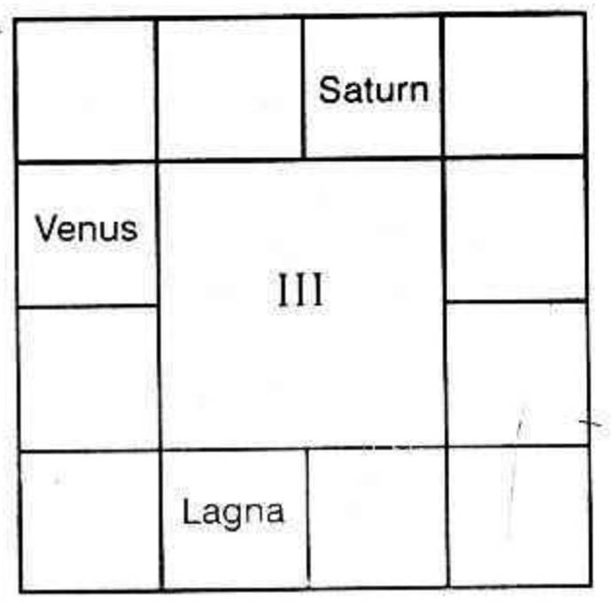

Vahana-Yogam
"Sir, whenever I visited your place and was patiently hearing you, while offering predictions to your clients, you used to mention often 'Guru-Balam' (or Vyazha Balam as Kerala people say, or Brahaspathi's beneficial strength during transit as North Indians say) has come. Hence one can get married or if one tries for service, he can enter into one; or if one makes attempts in any direction, he will come out successful and all the pending matters will take a favourable turn and materialise. But, how is it that nowadays you never use the phrase 'Guru Balam' at all."
"Yes! Yes" judging from the way things are happening nowadays, I have my own doubt whether Jupiter possesses any beneficial strength at all. It appears that it has lost much of its strength and that Venus is gaining more and more strength."
Why? What makes you, Sir, to consider like that?"
"It is not on any single point, I have come to this conclusion. In every walk of life, I find a thorough change."
"Years ago, girls within 12 years of age got married. The parents understood from the astrologers when "Guru Balam" comes for the girls and whether the so-called Guru Balam was there or not, they celebrated the marriages while the girls were young according to their individual luck or fate. They followed the tradition, did the religious rites for four days, and observed the Vaideek Dharmas and Karmas. Is it not a surprise nowadays for you to hear that a girl is getting married at her 14th year of age? Is there any wedding being celebrated for four days, performing Homam etc. Is not late marriage the order of the day. How many do Sandhya - Vanthanam regularly? Tharpanas to the departed souls are not done by many, at all. To do pooja, people do not find time. Temples are not visited by them unless something happens. Further, where is the respectful regard to the elders now? That is why I feel that Jupiter's strength is waning and marriage to the girls in proper age has become a problem.
Venus gains strength: True! But how do you say that Venus (Sukra) is gaining more strength? Is not Venus, the Chief Governor for matrimony?
Conjugal Bliss: No doubt, Venus is the Karaka for "Conjugal Bliss"; it is also the governor of music, fine arts, Bharatha Natya, conveyance, vehicle, vahanam, wealth, ornaments, ladies, etc. Conjugal happiness can be had.
Music: Consider music (vocal as well as instrumental): in every nook and corner, you hear music. Radios and transistors are plenty. Whether you own or not, you hear music during day and night. Sangeetha Sabhas are springing up everywhere. Musical concerts are arranged very frequently. Music Schools and Colleges are being opened. How many Cinema theatres are in existence and how many more are under construction? Also, the Touring Cinemas cater to the needs of the hamlets and villages. Bharatha Natyam had practically ceased to exist. Nowadays every girl has the desire to learn and earn a name.
Transport: Let us consider transport. Decades ago, our ancients took years to go round India. There were a few conveyances, and that too, which will move very slowly. But see how quickly they go round the world. Travel on land, seas, and in air are so frequently made that we have vastly improved in transport and travel convenience.
Venus is for chemicals. Students prefer to study chemistry medicine and chemical engineering.
Ladies: Venus represents ladies. What an advancement in colleges and schools the admission of ladies is increasing year by year. Ladies enter into service, politics and even take up administration. Ladies have swimming pools. They compete in sports. They drive cars, carts, plane, etc. They have won Noble Prizes. There is also a lady cosmonant.
Considering all these - absence of interest in vaidheek ceremonies - Sath Karmas, essential for Para Loka Suka, and more and more indulgence in Iha-Loka- I have to take that the strength of Jupiter is waning whereas that of Venus is waxing."
"No doubt, what you say is convincing enough; Further, when we enjoy some conveniences for some time, then without them, it is difficult to live. When I was in active service, conveyances were available at a moments call. After my retirement, all the so-called friends avoid me. Now, my son is doing business and he wants to buy a car. What do you say?"
"Have you brought the horoscope of your son?"
"I have got both mine and his."
"Come on, let me examine both."
"Here, Sir, Let me have your considered opinion. Please say who will buy."
"As you asked me to give 'considered opinion' I shall think aloud and finally offer my prediction.
Vahana-conveyance-is represented by the 4th house counted from one's Lagna as well as the beneficial effects of Venus. Fourth house, in addition to conveyance, indicates one's landed property, house property; estate, forest, cattle, mother, education, etc. If the fourth house is strong and has the beneficial aspect from Mars alone, one will buy land, building, etc. Aspect from only Mercury indicates education. Aspect from Moon shows mother. Venus indicates vehicles. Hence beneficial connection to the 4th house does not mean possession of vehicle or purchase of a car, alone. It may indicate the purchase of lands or buildings also.
But to state definitely whether one has 'Vahana Yoga' or not, the houses 4, 9, 10 and 11 counted from the ascendant as well as the benefical aspect of Venus, Moon or Jupiter should be considered.
"You said that the fourth house represents Vahanam. Why then, should the houses 9, 10 and 11 also be examined."
"House 9 is called Dharma, 10 is Karma and 11 is Labha. Houses 9 and 10 show one's fortune to enjoy his life in this birth, due to the meritorious deeds done in the previous birth, 9th house is termed as "Poorvapunya Sthanam". 9th house indicates long journey, whereas 10th house shows pilgrimage."
"What about the 11th house?"
11th house denotes whether one can have his desires fulfilled. To possess a cycle in youth, a scooter in school days - (till a child is born to him or her) and then a car, with radio set, etc., is the desire of almost every one.
Further, if houses 6, 7 and 8, counted from a Bhava, are not occupied by malefics, but are occupied by benefics, then the matter indicated by the Bhava will thrive." Therefore 9th, 10th and 11th houses show whether they sanction or deny this yoga.
"Venus is said to be the chief governor for conveyance. Why then, should Moon and Jupiter be examined?"
"Venus is the Karaka by nature. Moon owns the 4th sign of the Zodiac indicating change of residence, journey and conveyance. Jupiter owns the 9th house, showing one's Bagyam, long journey, etc., and Jupiter owning the 12th house of the Zodiac indicates investment. By nature, Jupiter shows one's financial position. All these three planets are natural benefics contributing to pleasant life in this world, hence, they need careful consideration."
"Alright! Vahanam is a general term. There are various Vahanas, viz. Naravahanas like palanquins, rickshaws, etc. Miruga Vahanas like carts, jutkas, coaches, tongas, etc; to cross water there are boats and steam launches; instead of using the power of a man or an animal, by using oil, petrol or water; we have scooters, motorcycles, motor cars, motor boats, ships, aeroplanes, helicopters, etc. Is it possible to find out, which vahana one will use?"
To go by palanquin carried by others or a rickshaw pulled by poor people is indicated when
(a) lord of the 4th house and Venus occupy the Ascendant;
(b) Moon and Saturn are both exalted in the two signs of Venus;
(c) Moon and Venus are in Kona or Kendhra;
(d) Lords of 1 and 4, as well as Venus and Moon conjoin together;
(e) Lord of 4 and Jupiter, Moon and Venus are strong and well posited, Or
(f) Lord of 4 and Jupiter occupy the 9th house.
Carts, Jutkas, coaches and tongas are indicated when
(a) Lord of 4 is associated with moon occupying the bestial signs;
(b) Jupiter is in 4 and the lords of 4 and 9 are in 11 or
(c) Moon and lord of 4 are in the ascendant; or
(d) The 2nd and the 4th houses are owned by benefics when Moon associated with a benefic occupies these houses; or
(e) Jupiter, Moon, Venus and the lord of 4 are in Kendhra or Kona;
(f) The lord of 4 associated with Guru-for a beautiful and spacious Vahanam;
(g) The lord of 4 is in a Kendhra and the lord of that Kendhrasthana is in the ascendant;
(h) Or Venus having six Bindhoos or benefic dots in its Ashtaka Varga - a beautiful carriage.
Jupiter or the 9th house, in any manner connected with Saturn shows travel by camel. If they are connected with moon, travel by elephant or horse or mule is indicated.
If the lord of Lagna is associated with these yogas, or if the yoga-causing planets are associated with Lagna, one will own and use the Vahana.
Should, however, the lords of 6, 8 or 12 be associated, or the yoga producing planets are in 6, 8 or 12 or if Rahu is in 4, or is conjoined with the lord of 4, one will use "Hired vehicles" or other's ones.
If Saturn and the lord of 6 are connected with Vahana-Yoga producing planets, one will be a driver. If Saturn is also the lord of 2, 4 or 11, the native may own and also drive the vehicle.
What are the yogas for the possession and use of power-propelled machines like motor cycle, car, etc.?"
"Mars indicates machinery and motor; Moon is a watery planet and shows water; Mars is a fiery planet and Moon denotes steam; Saturn stands for Geology and Moon for oil, kerosene; Venus is for purification. Therefore Saturn, Moon and Venus indicate petrol. Hence these planets, when associated with the houses 4, 9, 10 or 11 indicate "use of such motor ones".
If they are in human signs, they show two-legged vehicles. If they are in quadruped signs, they indicate train, etc. Mars and Moon stand for steam train; Mars, Mercury or Uranus stand for electric train.
Use of motor vehicle is indicated when;
(a) Cancer is the ascendant and Mercury and Venus are in 4, 7, 9, 10 or 11;
(b) Cancer or Aquarius is the Lagna and Venus is well posited;
(c) The lord of 4 is conjoined with Venus;
(d) The lord of 4 is in the second house conjoined with the lord of 10;
(e) The lord of 11 is in 4, aspected by the lord of Lagna and 10th house;
(f) The lords of 1, 4 and 9 are in Kendhra;
(g) The lord of 12 is in exaltation and is associated with lord of 2 and aspected by the lord of 9;
(h) The lords of 10 and 11 are in 4; or when lords of 10, 9 are in 4;
(i) An exalted planet in 10 is aspected by the lord of 9;
(j) A benefic is in the 8th house, with lords of 4, 9 and 10 in 2, 3 and 4 respectively;
(k) Venus is in 3, 7 or 11 counted from the Moon sign;
(l) Jupiter, Venus and the lord of 4 are in a Kona or Kendra or in 11;
(m) Jupiter, Venus and the lord of 9 are in 4 or 9;
(n) Or there is mutual exchange between the lord of 4 and 11; or between 4 and 5, or between 1 and 4, or 5 and 11, or 1 and 10/
(o) Or the lords of 4 and 5 occupy their own signs;
(p) Or the lords of 1 and 9 are in Swakshethra;
(q) Or the lords of 5 is in 9 and lord of 9 is in 10;
(r) Jupiter is in the 4th Bhava and the lord of 4 with Venus in 9 or 10;
(s) The 4th house has connection with lords of 4 and 9;
(t) Lords of 1 and 4 or 9 are in 11;
(u) Mars is lord of 2, in exaltation in, with Mercury, the lord of a Kendra.
(v) Or Mercury in 11, associated with the lord of the ascendant, promise the purchase and use of a vehicle.
Venus, Mars and Moon with beneficial strength contributes for motor car, etc., If they have any connection with Cancer, Scorpio, or Pisces they indicate boats, steam launches, ships etc.: if they have connection with Gemini, Libra or Aquarius, they indicate air travel.
Even though travel by some conveyance is indicated, if either the Lagna or lord of the Lagna is not connected with them, one cannot own it. If Rahu has connection, one can hire the vehicle".
"what are the Yogas indicating that one can have a free gift of Vahanam?" Is there any such yoga, in my son's horoscope?"
"There are a few yogas; one can have the gift of a car if-
(a) Lords of 1 and 4 are strong and they are posited in 11 aspected by the lords of 9 and 10.
As an illustration, the following chart is given:-
The balance of Mars Dasa at birth was 1 year 4 months 20 days. He got married in the end of January, 1961 during Jupiter Dasa, Mercury Bhukti, and Sun Anthra and obtained a car for his use from his father-in-law;
(b) the lord of 5 is in 9 and lord of 9 in 10, associated with lords of 1 and 4;
(c) the lords of 9 and 10 are in a Kendra or Kona associated with the lords of 4 aspecting each other; or,
(d) the lords of 4 and 9 are in exaltation or posited in the Lagna.
If Sun and the lord of 6 are connected with them, one can borrow money from the office and own a car, scooter or cycle.
If Jupiter and the lord of 6 are associated with the Vahana Yoga planets, one can have a car on hire purchase.
If Rahu is associated with Sun or the lord of 2, 10 and the Vahana Yoga Planet, one can use the pass issued by the office or use the vehicle of the Department in which he serves.
If the sublord of 4th cusp is associated with Mars, or significator of 3 and 11 Vahanayogam through brother is promised.
If Venus is in 4 with the lord of 4 in 7 and if the lords of 4 and 7 are friends, one can have Vahanam through partner, wife or husband. (See example charts give below)

The lords of 4 and 7 posited in 2, possessing benefical strength, also indicate Vahana Yogam through family members.
“Oh! There are so many chances for one to possess a vehicle. I see, will any one of the above combinations do? That is good, Now, what abut my chart-any gift-I don’t want free lift”.
“My dear friend, I don not find any such beneficial aspect in your horoscope for a gift”.
“That is my luck! Please carefully see whether my son at least will have one”.
“Even in your son’s chart, neither a gift, nor the use of the office car, nor the use of the cars of his friends is indicated. What a pity! I am sorry.”
“Does not matter. Can he at least borrow money and buy?”
“If the lord of 6 and the lord of 4 are in any manner connected, he can raise a loan and buy. Yes, He has that luck”.
“When?”
“When he runs the conjoined periods of the lords of 4 and 6: in their Dasas, Bhukties and Anthras. Also when they form beneficial aspects to their original position at time of birth during their transit-Gocharam”.
“May I request you to give the date. I am after all a lay man, whatever you say is ‘Latin’ to me.”
“In 1 year and 2 months he will borrow money and purchase a car”.
“Alright! Let us assume that he purchases. Will it be for good, or will it cause any trouble?”
“Loss through vehicle is indicated when -
(a) the lord of 4 is debilitated, eclipsed or hemmed in between malefics or occupies enemy’s camp,
(b) or, when a malefic owns the 4th house and any other malefic occupies the 4th house,
(c) when the lord of the 4th house occupies the second house and is associated with its enemy or with a debilitated planet or
(d) when a malefic owns the 12th house and has connection with the 4th house, or
(e) a malefic owns the 4th house and occupation the 8th house.
“Is there any such evil combination in his map?”
“No, but……”
“But What? Why do you hesitate, Don’t hide anything. Tell me plainly whether there is any danger.”
“No danger through vehicles drawn by animals is indicated because,
(a) the lord of 3 and Jupiter are not occupying the Lagna:
(b) Saturn as lord of 6 is not conjoined with either of the nodes Rahu or Ketu;
(c) the lords of I and 6 are not associated with Moon or Venus; and
(d) Rahu conjoined with Sun and Moon is not posited in Cancer or Leo ascendant, but-
“What, ‘but’ again?”
“You mean extra expenses, repayment of loan and pressure for money, is it?
“It is not financial trouble. But I expect some danger and consequently some difficulty, For (a) the waning Moon, posited in 4, indicates danger through vehicles. (b) Sun being in 8 and associated with malefics will cause danger, and injury to one’s body, Also,
(1) When Aries, Leo or Aquarius is aspected by Mars and Sun or
(2) When Saturn is conjoined with Mars and is connected with Rahu occupying the signs ruled by Venus to those born in Gemini or Virgo as ascendant; or
(3) When Sani, Sun and Mars are conjoined together and connected with Venus or the lord of 4, or
(4) When Jupiter, Sun and Mars are conjoined in the evil house, danger to human life by accident should be predicted.
But (a) if Moon is in Aries, Leo or Aquarius and is aspected by Saturn, Sun and Mars or
(b) if Venus occupies the 8th house and a malefic is in 4, the native will run his car over an animal or
(c) also, if Sun occupies the 10th house and Mars is in 4 or
(d) the lord of 8 occupies the last Drekkana of Gemini Mithuna, the driver will be hurt and he will fall down.
“What does my son’s chart threaten?”
“There is neither harm to him, nor to any other human life. But he will knock down an animal and then knock down a person. He will stop at once. Anyhow, he will have some difficulty and also monetary loss as he will have to pay some money to the owner of the animal or to the parents of the child.
“What is the difficulty”
There will be trouble through the traffic department and later through Law and Order (a) if the lord of 10 is associated with a malefic or occupies the navamsa sign owned by a malefic in the 4th house or (b) if Sun, Venus and Rahu occupy 12th Bhava or (c) if the lord of 4 and Saturn are in 12, or (d) the lords of 1, 4 and 8 are conjoined together in 6 or 12.
“Is it possible for you to find out when this will happen”
This will happen (a) “according to Kalachakra dasa, when there is “Simhavalokana” or “Lion’s Jump” or
(b) when the dasa and Bhukti of malefics (by lordship and not by nature) if either debilitated or eclipsed operate or
(c) during the Dasa and Bhukti of the planets in 6, 8 or 12
(d) during the conjoined periods of the planets causing this evil yoga.
“Can this not be prevented by proper propitiation, in time.”
“No. Not at all. Evils threatened by the malefics are bound to happen. They cannot be averted, dodged or prevented by doing Shanthi or by one’s will or trying to sit at home.
Let two instances be quoted here. When a gentleman was warned, he asked the editor to mention a number which will be fortunate for him, so that he can avoid any accident. The astrologer said ‘6’. So he had the car number as ‘6’. On the eventful day, (which he knew) he had a fancy for his friend’s new car and drove it. Alas! At the time already predicted he dashed against a person, and he had to face the consequences.
In another case, an injury was predicted to a doctor, years ago. He remembered the date as 19th December. So he granted leave to his assistants-did not go to the dispensary-took seat in his easy chair at home and was reading a medical bulletin. At that time, his youngest child crawled and went in between the four legs of his cow. By chance the doctor noticed it. He did not shout. But he got up suddenly, slipped, fell down and broke his arm on 19th December.
Hence, evil indicated by malefics will surely happen. No doubt the physician is a God-fearing gentleman. He is liberal-minded. He treats the poor free. He does Pooja, etc. Look at this.
“Alright: Nowadays it is not easy to get a car, especially in this locality. Can you guide me from where he can have it, please?”
“Generally the direction from where one can get the car is indicated by the lord of the Bhukti in Vimshothari dasa.
Also it will be the direction indicated by the rasi containing the largest number of beneficial dots in Jupiter’s ashtakavarga. From your son’s horoscope I can say that
(1) he will borrow money; after 1 year and 2 months and
(2) will buy a car, from a place north of your residence and
(3) will enjoy his life, (giving you lift occasionally);
(4) except on one occasion when he gets into trouble by dashing against an animal and a boy”.
The sublord of the 4th Cusp shows whether one can have vehicle in his life time or not. If the Sublord is in the constellation of a planet who is significator of 4, and is connected with Venus one must have.